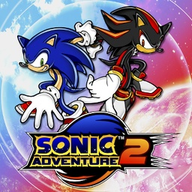

web installer

Builds the Nintendo Switch package of from your own copy. Everything runs in this browser: nothing is uploaded.
1. Choose your game
Nothing chosen yet.
Add
Nothing chosen yet.
2. Add the DLC (optional)
None.
3. Create the package
Your game's files are packed on all of this computer's cores with LZ4, the H.265 movies with ZXC (the
game reads them as they were), the movies re-encoded to H.265 and the music to Opus (above): about 2,400 MB down
to 1,170 MB, or 930 MB with the interviews left out. They go into one file, game_root.nxpack (with its
index, game_root.nxidx), which the Switch opens once instead of thousands of files. The game's shaders
are translated here for the Switch. The zip downloads while it is written; the pack, most of it, comes once
every file is done.
4. Copy it to the Switch
- If you have an older version, its
switch//game_rootfolder is not read any more (the game readsgame_root.nxpack): delete it to free its space. Copy bothgame_root.nxpackandgame_root.nxidxover the old ones. - Extract the zip to the root of the SD card: it makes
switch//. - In Sphaira, find the game, press X to open Options and choose Install Forwarder. Make sure Address Space is set to 39-bit, choose Create Forwarder, then start the game from the Home Screen. A forwarder made from an earlier version keeps that version's icon: make it again to get the new one.